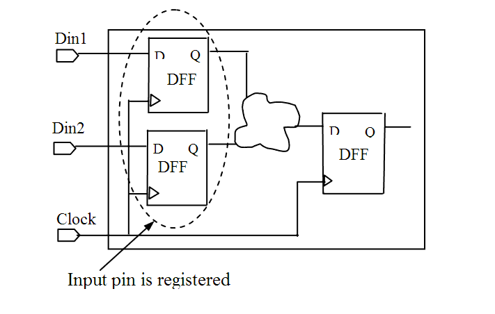

| Description | This rule fires when Leda detects unregistered input pins in the design. Any signal derived from a flip-flop is treated as registered. Registering input pins improves timing performance and helps avoid metastability. You can configure this rule to specify the units that you want to check using the rule_set_parameter Tcl command and the MIN_UNIT_SIZE parameter. Only the input pins of units that contain more than MIN_UNIT_SIZE number of gates/instances are checked. The default value is 20. For example:
leda> rule_set_parameter -rule NTL_STR03 \
-parameter MIN_UNIT_SIZE -value {30}
|
| Policy | DESIGN |
| Ruleset | STRUCTURE |
| Language | VHDL/Verilog |
| Type | Hardware |
| Severity | Error |
This is an example of invalid Verilog code, followed by a circuit diagram that illustrates the problem:
module ntl_str03_top (Clock, Din1, Din2);
input Clock, Din, Din21;
...
wire net_01, net_02, net_int1, net_int2; //internal signals
...
assign net_01 = net_int1 & Din2;
// NTL_STR03 fires -- input Din2 is not registered
always @(posedge Clock)
Din_reg <= Din2;
assign net_02= Din_reg ^ net_int2;
// OK -- Din_reg is registered
endmodule
